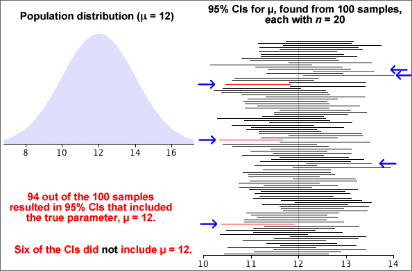

Simulation of properties
The diagram below shows results from a simulation of 100 samples, each of size n = 20, from a normal population. We now treat the population standard deviation, s, as being unknown and find a 95% confidence interval for µ from each sample using the formula

where t19 = 2.093.

Approximately 95% of these confidence intervals include the actual parameter value, µ = 12. If more simulations had been conducted, the proportion of intervals including µ would have been closer to 95%.
Note that the confidence intervals in the simulation do not all have the same width since the CI width depends on s and that varies from sample to sample.